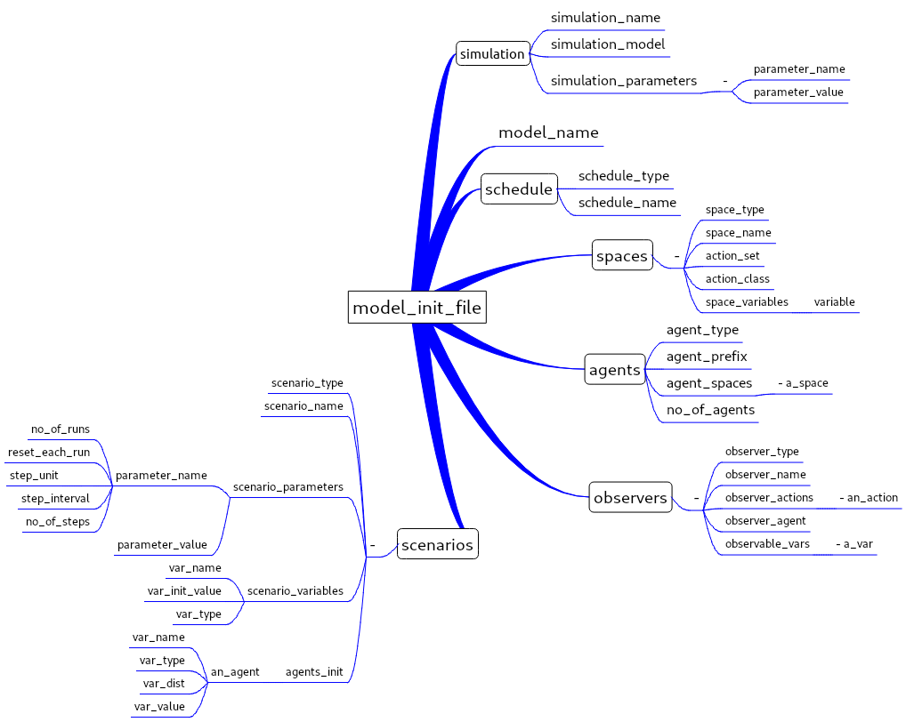

json definition files¶
Most of the elements used for the execution of a model in a simulation are defined in a json file. The idea behind this choice is to leave the framework flexible for the user to redefine the quantity of objects, initialization, types of agents and spaces that she/he has in a simulation. Allowing reuse of the code base developed for a model.
Simulation Definition¶
The json definition file
This file is the file that defines the simulation model (the parameters, the schedule type, the agents and the observers) and the simulation scenarios (initializations for the agents an space variables for each scenario).
The main structure of the json file is defined in the figure above.
{
"simulation_name": "ipd",
"simulation_parameters": [ ],
"model_name": "ipd",
"schedule": [ ],
"spaces": [ ],
"agents": [ ],
"observers": [ ],
"scenarios": [ ]
}
These are the main sections of the json file. Below we make a more detailed description for each part of the file.
App Configuration¶
{
"Description": "Configuration file for the ipd model",
"paths":
{
"kernel": "../kernel/",
"model": "../examples/ipd_model/",
"results": "../examples/ipd_model/runs/"
}
}
Ins this configuration file, is informed the position of the kernel, the model and the csv files from the simulation. These positions can be either relative, if the model is in the normal framework directory three or absolute, if it is on other folder than the included in the software.
Sistem Configuration¶
{
"Description": "Configuration file for the Ecos_p Economic Simulation",
"Paths":
{
"kernel": "../kernel",
"interface": "../interface",
"tests": "../tests"
}
}
Here the configuration file for the framework.